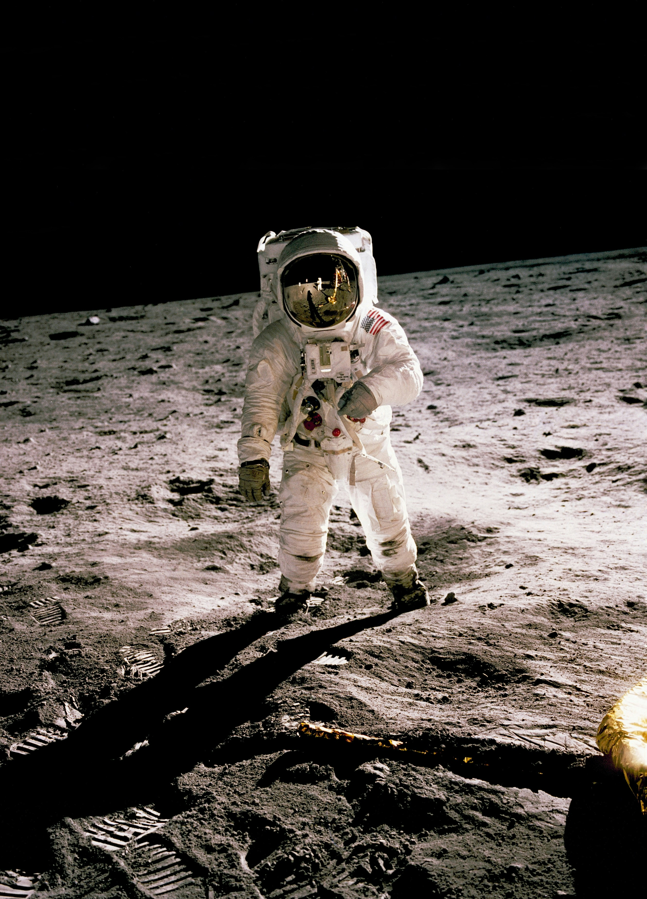
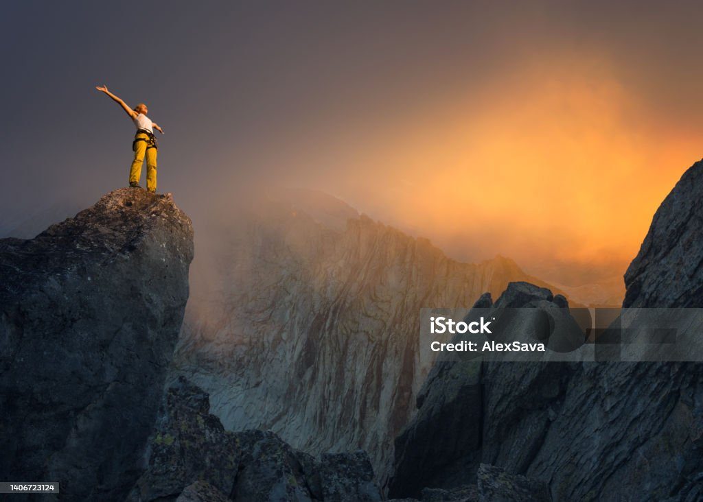

Bienvenue dans l'Univers du Savoir
Avec Amine Bessalah
✦ ✦ ✦ ✦Explorez les profondeurs de l'espace et découvrez le mystique personnage incarnant la connaissance.




À propos de moi
Mystique et porteur d’un savoir ancien, j’ai voyagé à travers les galaxies pour recueillir des connaissances millénaires.
Mon parcours
Mon périple interstellaire m’a conduit à explorer des mondes inconnus, récoltant les secrets de l’univers et forgeant mon destin dans la lumière des étoiles.